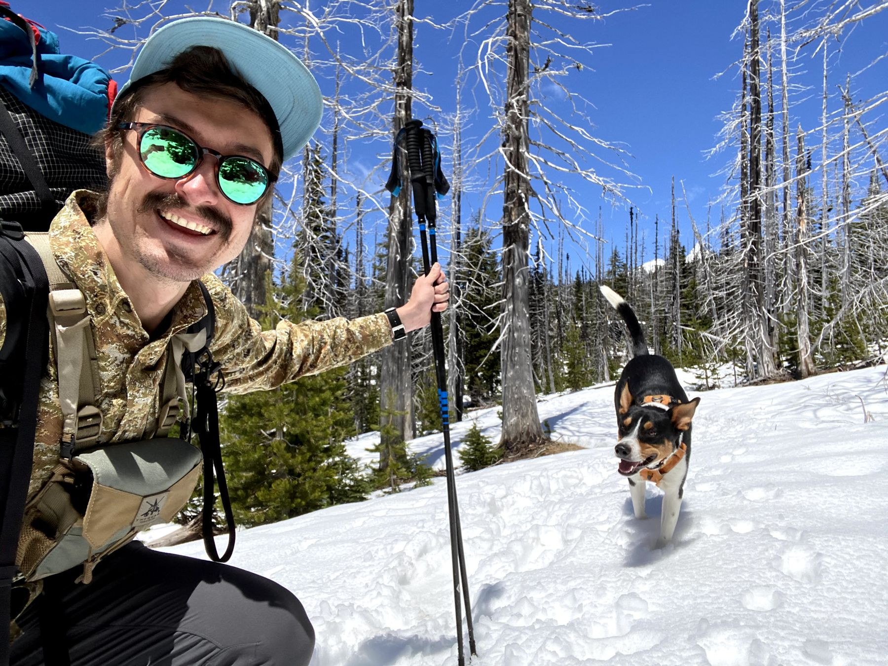

Hi, I’m Peter.
I lead AI programs at enterprise scale, and I build with AI every day. Also: full-time snack carrier for a dog named Charlie Brown.

I’m an Engagement Lead (Associate Director) at Publicis Sapient in Dallas, where I lead an AI and digital transformation engagement for a global electrical supply distributor. That has meant rolling out GitHub Copilot across its engineering teams, designing an AI-driven sales order automation program, and keeping 40+ engineers on four continents shipping in the same direction.When I’m not at work, I’m usually on a bike or a trail. Usually with a dog in tow. Usually muddy.
I don’t just manage AI work, I build with it. I’ve used Copilot as a daily build tool for two years to ship agents, research tools and dashboards, including a recipe optimizer that turns NYT recipes into macro-targeted meal plans. This site is one of those builds.
Before that I ran program delivery for Daimler Truck’s autonomous trucking R&D effort, helped found an impact investing startup, and started out in public service.
Have a look around:
- About meWhere I’ve worked, what I’ve built, my résumé and, yes, more of the dog.
- Meanderings & digressionsSomething akin to a blog: data stories about books, running, and who really pays for conservation.
- TravelsA map of the 26 countries and territories I’ve wandered through so far.
- Say helloI’m always up for a good conversation. Really.
A few snapshots